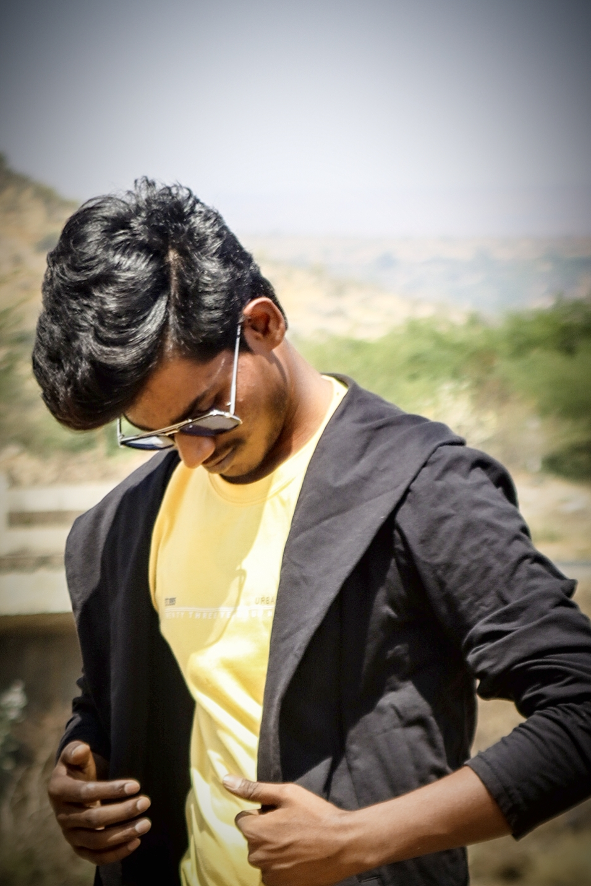

I am P.Madar vali. I pursued B.Tech with xx% at Santhiram Engineering College in Nandyal. I completed my Intermediate at GSR&PVR College in Nandyal with 68%click here.I completed my SSC at PRAGATHI Public School in Koilkuntla with a 9.2 GPAclick Here.
I learned front-end languages like HTML and CSS, which are used in developing websites. Using my knowledge of front-end languages, I developed two projects named “Blood Donor” site and “Portfolio”. I also acquired proficiency in back-end languages such as Python, Java, and DBMS. Utilizing these back-end languages, we, a team of three members, developed an app usingAndroid Studio. The app is based on the curriculum of JNTUA.
